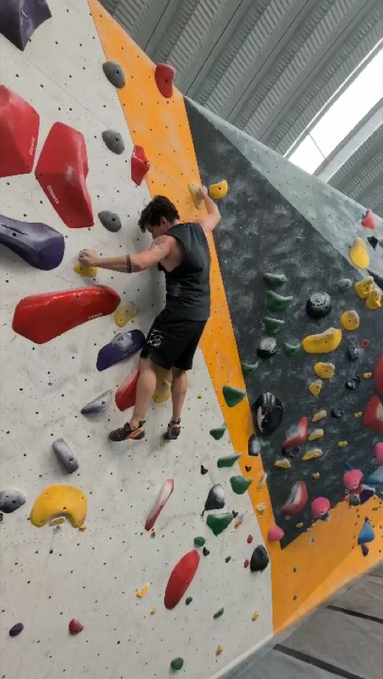
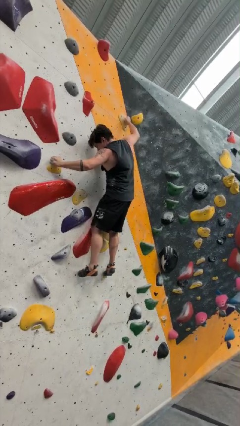
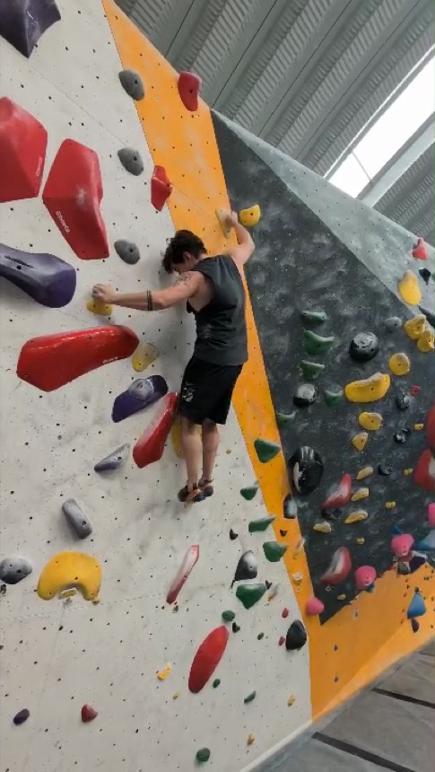

Flowstate is a climbing coach I built and shipped. You upload a video of an attempt, pose estimation measures the body, and a vision-language model writes the coaching. I tested whether the model understood the movement it was coaching. Three results, one climb, every quote the product's actual output.
Slight overhang, gym, filmed at 28.6 frames per second. I fall at 24.8 s. The cause is an uncontrolled foot switch: the left foot leaves its hold and lands beside the right foot in a third of a second. Everything after that, the right leg swinging, the hip opening, the arms stretching, is the body trying to recover.



Any climber watching this names it in one viewing. Three versions of the coach analysed this same video. Here is what each said caused the fall.
La caída no fue por falta de alcance, sino porque el torso giró antes de que el pie derecho asentara un punto de apoyo.The fall was not a reach problem: the torso turned before the right foot had set a base.
La cadera se balanceó lateralmente en el crux porque los pies dejaron de presionar activamente justo cuando el torso empezó a girar.The hip swung sideways because the feet stopped pressing just as the torso began to turn.
Ambos pies se quedan bajos y se separan justo cuando estiras el brazo derecho hacia el agarre alto; las piernas dejan de empujar y la cadera se abre hacia afuera del muro.Both feet stay low and spread apart as you reach with the right arm; the legs stop pushing and the hip opens away from the wall. Timestamped 22.66 to 24.16 s.
All three describe what the body did after the switch: torso turns, feet stop pressing, hip opens. None names the switch. The part of the production pipeline that looks at the frames wrote the words "switch" and "swap" zero times. Its claim came from a hip-stability number that jumped 266 percent, not from anything seen on a foot. The outputs are fluent, specific, and point at the right second. They describe the consequence as the cause.
The agent version of the coach is free to investigate. It has ten tools and ten steps: it can pull frames from any part of the video, zoom on a body part, ask for extra frames inside any window, and read per-limb motion numbers. Below, the speed of each ankle through the crux, with the frames the agent actually received drawn as dashed lines.
since previous frame: 1.68s · moved (torso-lengths): right_hand path 5.68 net 0.90, left_foot path 1.23 net 1.23, hips path 0.31 net 0.31, right_foot path 0.25 net 0.25The motion line attached to frame 649. The left foot travelled 1.23 torso-lengths and stayed there: a foot relocated, under load, in the crux. The automatic warning did not fire because the rule looked for movement that goes out and comes back. A climber reading that line goes to look. The agent did not request a single frame inside.
The pattern held across every stored run: the agent looks at the video once, at step 0, forms a story from the numbers, and uses the remaining steps to confirm it. The targeted frame tool exists precisely for gaps like this one. In 18 runs it was pointed at the aftermath every time.
We asked a simple question: does the coach actually use the video? To find out, the same agent ran four times on the same climb, and the only thing that changed was what it was allowed to see. Control saw the eight frames it normally gets. Blind saw no images at all, only the pose numbers and the stage table. Evidence removal saw the frames with the moment of the fall cut out. Swap was shown another climber's video under this climb's name, so it could not be right; it is there to check that the scoring can tell wrong from right. I then scored every descriptive claim in the four outputs as true, partly true, false or unverifiable, shuffled so I did not know which arm had written it.
| Arm | What it saw | True | Partly | False | Can't verify | Share of claims true |
|---|---|---|---|---|---|---|
| blind | no images | 3 | 0 | 1 | 0 | |
| control | 8 frames | 1 | 1 | 1 | 1 | |
| evidence removal | 8 frames, fall cut out | 0 | 3 | 1 | 1 | |
| swap | another climber's video | 0 | 1 | 3 | 0 |
Entre 23.4 s y 24.2 s tu pie derecho sube muy alto pero recorre mucho camino sin fijarse: busca, resbala y vuelve casi al mismo punto."Your right foot goes very high but travels a lot without setting: searches, slips, returns." Specific, timestamped, at the moment of the recovery, and wrong.
En 20.9 s lanzas un alcance largo con la mano derecha mientras las piernas se descomprimen y las caderas se alejan de la pared."You launch a long reach with the right hand while the legs decompress and the hips leave the wall." Generic, plausible, built from the numbers alone, and mostly right.
Before any scores existed, I was shown these two outputs as A and B, told one had received no images, and asked which. I picked the sighted one as the blind one: "it talks about the right foot stepping in a timeframe but that's not the case, that's exactly when the uncontrolled footswitch happens."
The shipped coach is a three-stage pipeline: a perceiver that sees a handful of frames spread across the climb and writes structured observations, a text-only analyst that reasons over those observations plus pose metrics, and a writer that produces the coaching. The analyst never sees pixels. The two production quotes in Finding 1 are from the same climb run through this pipeline twice while the analyst prompt was being rewritten, both on Claude Sonnet 5.
The agent version replaces the fixed passes with a tool loop: ten tools (extract frames, extract frames from a chosen window, zoom on a body part, compute metrics, search the technique corpus, and others), a budget of ten steps, the model decides what to call. Each frame it receives carries a landmark-confidence line and a motion line describing what the pose data says moved since the previous frame. The quotes in Finding 2 are from the control run of the ablation, which ran on the final agent code; the Finding 1 agent quote is from the earlier live run. The count of 18 covers every stored agent run on this climb, across five versions of the agent code.
Four arms. Control and blind ran on the final agent code; swap and evidence removal ran on an earlier build with an earlier prompt. The A/B question in Finding 3 was asked before any scoring. Scoring was done in two blinded passes: a whole-text rating, then a claim-level audit of 17 descriptive claims, shuffled and unattributed. One climber judged, who is also the climber in the video.
Speed is the ankle landmark's displacement between consecutive frames, times 28.6 frames per second, in torso-lengths, where one torso-length is the mean shoulder-to-hip distance over frames 600 to 700. Left ankle peaks at 7.1 torso-lengths per second at frame 640, inside the switch. The right-ankle landmark has low confidence on this camera side for the whole climb, so its trace is indicative only. The large spikes after 24.5 s are the fall.
As direction, not rates. One judge, two climbers' footage, three to five checkable claims per output. Every figure on this page is from a file on disk: stored traces, stored outputs, the pose series, the scoreboard. Quotes in Spanish are the product's actual output; the glosses are mine.